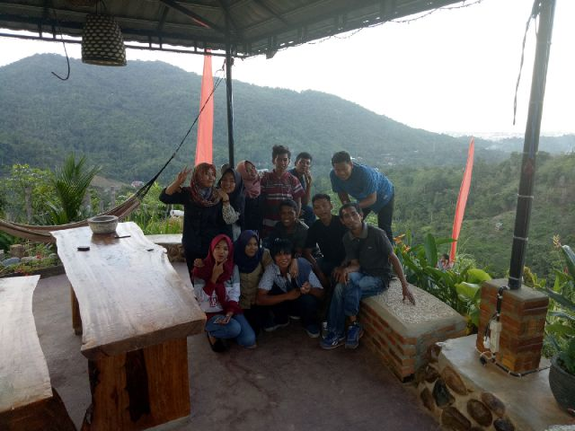

Setelah ramai diperbincangkan melalu media sosial cerita dan cerita melalui keluarga, sahabat, dan kerabat akhirnya bukit 513 mulai dikenal dan menjadi tempat favorit keluarga untuk mengisi liburan atau hanya sekedar berkunjung dan berfoto bersama keluarga kemudian menikmati panorama alam pegunungan dan hamparan lautan dan kota palopo dari ketinggian kurang lebih 500 mdpl.
Tidak hanya itu bukit 513 juga memiliki suasana yang sejuk dan asri serta memiliki banyak spot untuk berselfie, sehingga membuat tempat wisata ini sangat digandrungi wisatawan terutama para kaum remaja untuk sekedar bercerita, berfoto bersama dan masih banyak lagi yang dapat dilakukan disana.
 Bukit 513 ini berjarak 8 kilo meter dari Pusat Kota, serta mudah untuk dijangkau baik menggunakan Kendaraan Roda empat maupun kendaraan Roda Dua, perjalanan menuju bukit 513 membuat akan memacu adrenalin para pengunjung dimana akses menuju ketinggian bukit memiliki jalan yang berbelok dan bergejolak, Jalan sedikit sempit dan menanjak.
Disarankan kepada pengunjung untuk menggunakan transportasi roda dua untuk memudahkan akses menuju bukit 513. Ongkos masuk menuju Bukit 513 bisa dibilang sangat- sangat cukup murah, sehingga wisatawan dapat merogoh kocek sebesar 5000 rupiah saja per orangnya dan kita bisa menikmati fasilitas yang tersedia.